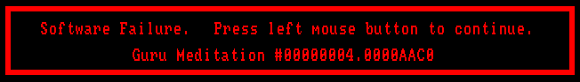

Adding 💥Fault💥
Handling to µEforth
═══════════════════
January 28, 2023
What is Fault Handing?
══════════════════════
🙈 Reading an "illegal" addresses
🤬 Writing an "illegal" addresses
🔥 Executing an "illegal" addresses
🚫 Divide by zero
☝ User interrupt
What's an "illegal" address?
════════════════════════════
💀 Unmapped memory
⛔ Memory with wrong permissions
🌀 Unaligned memory (sometimes)
Guru Meditation Error: Core 1 panic'ed (LoadProhibited). Exception was unhandled.
Core 1 register dump:
PC : 0x400d4e00 PS : 0x00060a30 A0 : 0x800d5300 A1 : 0x3ffb2650
A2 : 0x3ffe4bd8 A3 : 0x3ffe7e44 A4 : 0x3ffe53f8 A5 : 0x0000007b
A6 : 0x3ffe5bdc A7 : 0x3ffe5bd8 A8 : 0x800d51b9 A9 : 0x3f40d104
A10 : 0x3f40d02c A11 : 0x3ffe63dc A12 : 0x400d4dfe A13 : 0x3ffe7ca8
A14 : 0x00000001 A15 : 0x3ffe7ca8 SAR : 0x0000000a EXCCAUSE: 0x0000001c
EXCVADDR: 0x0000007b LBEG : 0x4008a4c8 LEND : 0x4008a4d2 LCOUNT : 0x00000000
Backtrace:0x400d4dfd:0x3ffb26500x400d52fd:0x3ffb2800 0x400dbc35:0x3ffb2820
@guru.gif

Goal: 🥅
Turn faults into
regular Forth exceptions
: evil 0 @ ; 🙈 🙉 🙊
: ignore-evil
['] evil catch ." got: " . ;
ignore-evil
got: -1 ok
: bad-read 0 @ ;
: bad-write 123 0 ! ;
: bad-call 0 call ;
: bad-div 123 0 / ;
And even failures
outside Forth!
(in theory)
Alternatives?
═════════════
☉ Make C@, C!, @, ! etc. more expensive
☉ Closed address space (Dr. Ting's Eforth)
Parts to Fault Handling
═══════════════════════
☉ Interception of a fault
- How to intercept bad things?
☉ Resumption to a safe state
- How to get back to Forth?
Fault Detection in Theory
═════════════════════════
☉ In hardware, close to an interrupt handler
- In fact, often done as type of interrupt
☉ Typically involves special intructions entry/exit
- stashing of some registers
- instruction like IRET
☉ Challenging for high level languages
- Current stack may be smashed
- Global structures may be in bad state
- It may be unwise to go deeper in the stack
- Even C finds this hard
Challenges of Abstraction
═════════════════════════
☉ Contradictory goals:
- Allow flexibility to resume
- Allow "normal" code to be used
☉ Interacts poorly with threads
- Which thread handles the event?
- Do the other threads keep running?
Fault Detection by Platform
═══════════════════════════
🐧 Linux - Signals
🪟 Windows - Structured Exceptions
😲 ESP32 Xtensa - User Exception + a Saga
😲 ESP32 RISC-V - Saga in progress
Linux + Signals
═══════════════
👴 Classic signal()
👦 Replaces by sigaction()
#include <signal.h>
typedef void (*sighandler_t)(int);
sighandler_t signal(int signum, sighandler_t handler);
#include <signal.h>
int sigaction(int signum, const struct sigaction *act,
struct sigaction *oldact);
struct sigaction {
void (*sa_handler)(int);
void (*sa_sigaction)(int, siginfo_t *, void *);
sigset_t sa_mask;
int sa_flags;
void (*sa_restorer)(void);
};
int sigaltstack(const stack_t *ss, stack_t *old_ss);
Resuming to Forth
═════════════════
▶️ Restore Forth registers
from latest exception handler
▶️ Get CPU instruction pointer
back into NEXT
( Exceptions )
variable handler
: catch ( xt -- n )
fp@ >r sp@ >r handler @ >r rp@ handler ! execute
r> handler ! rdrop rdrop 0 ;
: throw ( n -- )
dup if handler @ rp! r> handler !
r> swap >r sp! drop r> r> fp! else drop then ;
[ old handler ] ← handler
[ sp | ]
[ fp | ]
.... ↓
[ old handler ]
[ sp ]
[ fp ]
#define THROWIT(n) \
rp = *g_sys->throw_handler; \
*g_sys->throw_handler = (cell_t *) *rp--; \
UNPARK; tos = (n);
How to GOTO
anywhere?
#include <setjmp.h>
int setjmp(jmp_buf env);
void longjmp(jmp_buf env, int val);
static cell_t *forth_run(cell_t *init_rp) {
static const BUILTIN_WORD builtins[] = {
#define Z(flags, name, op, code) \
name, ((VOC_ ## flags >> 8) & 0xff) | BUILTIN_MARK, \
sizeof(name) - 1, (VOC_ ## flags & 0xff), && OP_ ## op,
PLATFORM_OPCODE_LIST
TIER2_OPCODE_LIST
TIER1_OPCODE_LIST
TIER0_OPCODE_LIST
#undef Z
0, 0, 0, 0, 0,
};
if (!init_rp) {
g_sys->DOCREATE_OP = ADDROF(DOCREATE);
g_sys->builtins = builtins;
💥forth_faults_setup();💥
return 0;
}
register cell_t *ip, *rp, *sp, tos, w;
register float *fp, ft;
rp = init_rp; UNPARK; 💥FAULT_ENTRY;💥 NEXT;
#define Z(flags, name, op, code) OP_ ## op: { code; } NEXT;
PLATFORM_OPCODE_LIST
TIER2_OPCODE_LIST
TIER1_OPCODE_LIST
TIER0_OPCODE_LIST
#undef Z
}
#include <setjmp.h>
#include <signal.h>
static __thread jmp_buf g_forth_fault;
static __thread int g_forth_signal;
#define FAULT_ENTRY \
if (setjmp(g_forth_fault)) { THROWIT(-g_forth_signal); }
static void forth_signal_handler(int sig) {
g_forth_signal = sig;
sigset_t ss;
sigemptyset(&ss);
sigprocmask(SIG_SETMASK, &ss, 0);
longjmp(g_forth_fault, 1);
}
static void forth_faults_setup(void) {
struct sigaction sa;
memset(&sa, 0, sizeof(sa));
sa.sa_handler = forth_signal_handler;
sigaction(SIGSEGV, &sa, 0);
sigaction(SIGBUS, &sa, 0);
sigaction(SIGINT, &sa, 0);
sigaction(SIGFPE, &sa, 0);
}
SIGSEGV = memory violation
SIGBUS = alignment violation
SIGINT = Ctrl-C
SIGFPE = floating point exception
(integer divide by zero)
Windows Structured Exceptions
═════════════════════════════
🔥 Windows specific mechanism
for hardware + software exceptions
🔥 Structred try, catch, finally
leveraging call frame or unwind information
🔥 Combines try, catch, finally leveraging call frame
__try {
.. code ..
} __except ( .. expression .. ) {
.. handler ..
} __finally {
.. unwind code ..
}
-1 = EXCEPTION_CONTINUE_EXECUTION
0 = EXCEPTION_CONTINUE_SEARCH
1 = EXCEPTION_EXECUTE_HANDLER
static cell_t *forth_run(cell_t *init_rp) {
static const BUILTIN_WORD builtins[] = {
#define Z(flags, name, op, code) \
name, ((VOC_ ## flags >> 8) & 0xff) | BUILTIN_MARK, sizeof(name) - 1, \
(VOC_ ## flags & 0xff), (void *) OP_ ## op,
PLATFORM_OPCODE_LIST
TIER2_OPCODE_LIST
TIER1_OPCODE_LIST
TIER0_OPCODE_LIST
#undef Z
0, 0, 0,
};
if (!init_rp) {
g_sys->DOCREATE_OP = ADDROF(DOCREATE);
g_sys->builtins = builtins;
return 0;
}
register cell_t *ip, *rp, *sp, tos, w;
register float *fp, ft;
rp = init_rp; UNPARK;
for (;;) {
__try {
for (;;) {
next:
w = *ip++;
work:
switch (*(cell_t *) w & 0xff) {
#define Z(flags, name, op, code) case OP_ ## op: { code; } NEXT;
PLATFORM_OPCODE_LIST
TIER2_OPCODE_LIST
TIER1_OPCODE_LIST
TIER0_OPCODE_LIST
#undef Z
}
}
} __except (1) {
THROWIT(GetExceptionCode());
}
}
}
What about
Ctrl-Break?
Windows Ctrl-Break/C
══════════════════
💥 SetConsoleCtrlHandler
- Must happen after AllocConsole
💥 Ctrl-Break/C triggers
a handler on separate thread
💥 How to move back to the
main thread, CRASH it!
YV(windows, SetupCtrlBreakHandler, SetupCtrlBreakHandler()) \
static DWORD forth_main_thread_id;
static uintptr_t forth_main_thread_resume_sp;
static uintptr_t forth_main_thread_resume_bp;
static void SetupCtrlBreakHandler(void) {
forth_main_thread_id = GetCurrentThreadId();
SetConsoleCtrlHandler(forth_ctrl_handler, TRUE);
CONTEXT context = { 0 };
context.ContextFlags = CONTEXT_CONTROL;
GetThreadContext(GetCurrentThread(), &context);
#ifdef _WIN64
forth_main_thread_resume_sp = context.Rsp;
forth_main_thread_resume_bp = context.Rbp;
#else
forth_main_thread_resume_sp = context.Esp;
forth_main_thread_resume_bp = context.Ebp;
#endif
}
static BOOL WINAPI forth_ctrl_handler(DWORD fdwCtrlType) {
HANDLE main_thread;
CONTEXT context = { 0 };
if (fdwCtrlType == CTRL_C_EVENT ||
fdwCtrlType == CTRL_BREAK_EVENT) {
// Using explicit instead of THREAD_ALL_ACCESS to be explicit as per docs.
// THREAD_QUERY_INFORMATION seems to be required for reasons unknown on x64.
main_thread = OpenThread(THREAD_QUERY_INFORMATION |
THREAD_SET_CONTEXT |
THREAD_GET_CONTEXT |
THREAD_SUSPEND_RESUME, FALSE, forth_main_thread_id);
SuspendThread(main_thread);
context.ContextFlags = CONTEXT_CONTROL;
GetThreadContext(main_thread, &context);
#ifdef _WIN64
context.Rip = 0;
context.Rsp = forth_main_thread_resume_sp;
context.Rbp = forth_main_thread_resume_bp;
#else
context.Eip = 0;
context.Esp = forth_main_thread_resume_sp;
context.Ebp = forth_main_thread_resume_bp;
#endif
SetThreadContext(main_thread, &context);
ResumeThread(main_thread);
CloseHandle(main_thread);
return TRUE;
}
return FALSE;
}
ESP32 Panic Handler
═══════════════════
🚫 Triggers for many/most failures
🚫 Doesn't seem have documented
knobs except gdb hook
ESP32 Xtensa Exceptions
═══════════════════════
🔥 Xtensa Exception Option
🔥 Described in Xtensa Instruction Set doc
https://0x04.net/~mwk/doc/xtensa.pdf
🔥 UserExceptionVector
So I went spelunking
⛰️
with my new disassembler!
$40080000 _WindowOverflow4
$40080040 _WindowUnderflow4
$40080050 _xt_alloca_exc ↠stuffed in gap
$40080080 _WindowOverflow8
$400800c0 _WindowUnderflow8
$40080100 _WindowOverflow12
$40080140 _WindowUnderflow12
$40080180 _Level2Vector
$400801c0 _Level3Vector
$40080200 _Level4Vector
$40080240 _Level5Vector
$40080280 _DebugExceptionVector
$400802c0 _NMIExceptionVector
$40080300 _KernelExceptionVector
$40080340 _UserExceptionVector ↠🔥 THIS! 🔥
$400803c0 _DoubleExceptionVector
xtensa_vectors.S
🔥 _UserExceptionVector 🔥
calls...
🔥 _xt_user_exc 🔥
Examines EXCCAUSE
dispatches to...
🔥 _call_loadstore_handler 🔥
calls...
xtensa_loadstore_handler.S
🔥 LoadStoreErrorHandler 🔥
but then goes back and...
🔥 _xt_user_exc 🔥
and calls a handled from:
_xt_exception_table
Which can be set with...
typedef void (*xt_exc_handler)(XtExcFrame *);
xt_exc_handler xt_set_exception_handler(int n, xt_exc_handler f);
So I can...
#include <setjmp.h>
#include "soc/soc.h"
#include <xtensa/xtensa_api.h>
static __thread jmp_buf g_forth_fault;
static __thread int g_forth_signal;
static __thread uint32_t g_forth_setlevel;
#define FAULT_ENTRY \
if (setjmp(g_forth_fault)) { THROWIT(-g_forth_signal); }
static void IRAM_ATTR forth_exception_handler(XtExcFrame *frame) {
g_forth_signal = frame->exccause;
XTOS_RESTORE_INTLEVEL(g_forth_setlevel);
longjmp(g_forth_fault, 1);
}
static void forth_faults_setup(void) {
xt_set_exception_handler(EXCCAUSE_LOAD_STORE_ERROR, forth_exception_handler);
xt_set_exception_handler(EXCCAUSE_PRIVILEGED, forth_exception_handler);
xt_set_exception_handler(EXCCAUSE_UNALIGNED, forth_exception_handler);
xt_set_exception_handler(EXCCAUSE_DIVIDE_BY_ZERO, forth_exception_handler);
xt_set_exception_handler(EXCCAUSE_INSTR_ERROR, forth_exception_handler);
xt_set_exception_handler(EXCCAUSE_ILLEGAL, forth_exception_handler);
xt_set_exception_handler(EXCCAUSE_LOAD_PROHIBITED, forth_exception_handler);
xt_set_exception_handler(EXCCAUSE_STORE_PROHIBITED, forth_exception_handler);
xt_set_exception_handler(EXCCAUSE_INSTR_PROHIBITED, forth_exception_handler);
uint32_t default_setlevel = XTOS_SET_INTLEVEL(XCHAL_EXCM_LEVEL);
XTOS_RESTORE_INTLEVEL(default_setlevel);
g_forth_setlevel = default_setlevel;
}
What about
RISC-V?
components/riscv/vectors.S
--------------------------
.balign 0x100
.global _vector_table
.type _vector_table, @function
_vector_table:
.option push
.option norvc
j _panic_handler /* exception handler, entry 0 */
.rept (ETS_T1_WDT_INUM - 1)
j _interrupt_handler /* 24 identical entries, all pointing to the interrupt handler */
.endr
j _panic_handler /* Call panic handler for ETS_T1_WDT_INUM interrupt (soc-level panic)*/
j _panic_handler /* Call panic handler for ETS_CACHEERR_INUM interrupt (soc-level panic)*/
#ifdef CONFIG_ESP_SYSTEM_MEMPROT_FEATURE
j _panic_handler /* Call panic handler for ETS_MEMPROT_ERR_INUM interrupt (soc-level panic)*/
.rept (ETS_MAX_INUM - ETS_MEMPROT_ERR_INUM)
#else
.rept (ETS_MAX_INUM - ETS_CACHEERR_INUM)
#endif //CONFIG_ESP_SYSTEM_MEMPROT_FEATURE
j _interrupt_handler /* 6 identical entries, all pointing to the interrupt handler */
.endr
components/esp_system/port/cpu_start.c
🔥🔥🔥🔥🔥🔥🔥🔥
esp_cpu_intr_set_ivt_addr(&_vector_table);
Missing Things
══════════════
🌀 So maybe RISC-V next time...
🌀 Document and standardize throw values
💣 DEMO 💣
QUESTIONS?
🏵
Thank you!